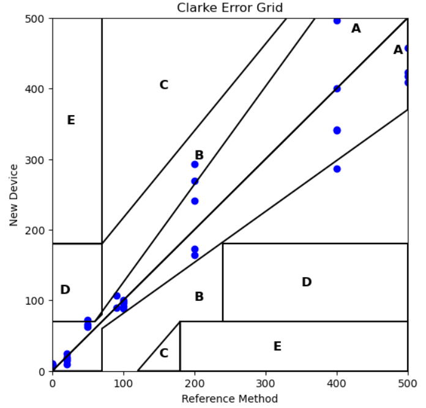

Project Milestones
Milestone 4: Potentiostat
We are using the IO Rodeo’s Rodeostat as our potentiostat circuit base.
How to Set Up the IO Rodeostat
- Download
potentiostat.pyfrom the IO Rodeo GitHub (version 0.0.9) - Follow the setup instructions at IO Rodeo Docs
- Customize your code and begin testing
Calibration

Clarke Error Grid
Methodology
- Apply a 200 mV potential after a 6-second quiet time (reaction period)
- Step potential and quiet time were experimentally optimized
- Run chronoamperometry for 1 second
- Perform linear regression of current vs. 1/√t
- Convert regression slope to glucose concentration using a calibration function
Data Analysis Pseudocode
Load chronoamperometry data into DataFrame (Excel/CSV)
Use parse_data(df, num_columns):
- Extract t, V, and I
- Mask out pre-step regions
- Return only the active electrochemical window
Use compare_regression(df, conc, col, smooth_func, plot):
- Slide regression window across i vs 1/√t
- Maximize R² to find Cottrell region
Use get_analyzed_data(...):
- Slice data using optimal or fixed indices
- Fit 1/√t vs. smoothed current
- Save slope, R², and fit info
Build calibration model:
- Try single linear or 2nd-order polynomial
- Overlay ±15% ISO bounds
- Return regression params and R²
Test piecewise fit:
- Fit two linear models for low/high glucose
- Auto-detect intersection point
- Plot both fits and ISO bands
Validate with Clarke Error Grid